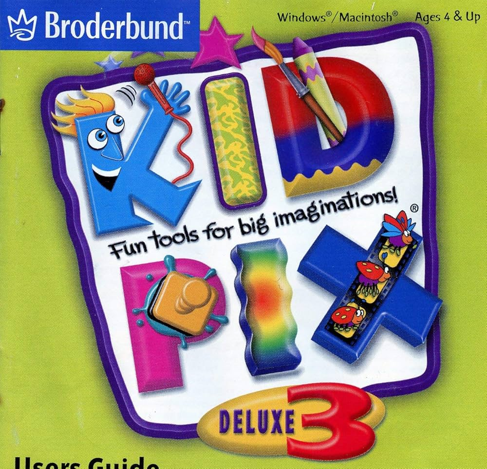
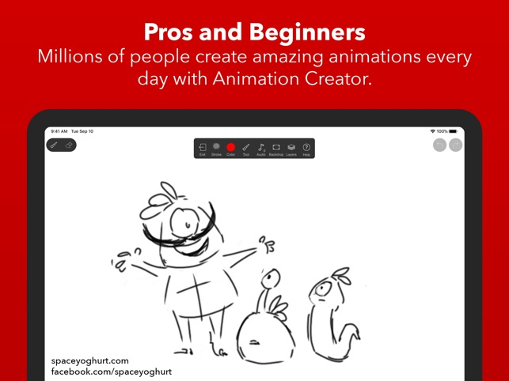

Early Years
In 2008, I was drawing pictures of characters doing various, random, and silly things on Kid Pix. Sometime later, I made a few pictures that goes along with what's happening like it's a story.
In 2013, I began to make fake screenshots like they appear in an actual episode on Kid Pix. This give me ideas if they want to appear in an actual animation.
Followed by the same year, my YouTube channel was created in June 28, 2013. However they were mostly random clay videos that takes the story of another show and putting my own spin to them. Sometime later, the channel went on hiatus for a very long time.

In 2014, I drew images on Doodle Buddy, and make a frame by frame of them, just like if it's an animation, but this is just the beginning.
In 2015, I drew pictures on my index cards of characters doing random, silly things, and some that are full of imagination. These help me imgaine of what to make when it comes to a scene that happens in order, where it starts to finish, and think of what to animate if it happens. This lasts until 2017, which is where the main event begins
Followed by the same year in 2015, I discovered an animation app called Animation Creator HD. I've been using this app for a very long time and I've been testing out animations on the app ever since.
In 2018, my YouTube channel made a surprise return with an animation that was made into a series which brings characters into the real world. This gained lots of views and I continued to make animations nonstop.
In 2023, I discovered a new way of bringing characters to life. iMovie has the option to add green screens in your video. As of today, I make character animations on a green screen and record the background with my camera. I put them together and I have an animated character on a fully moving background and not still the whole scene.